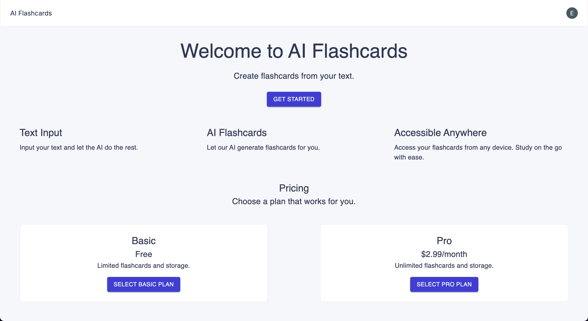
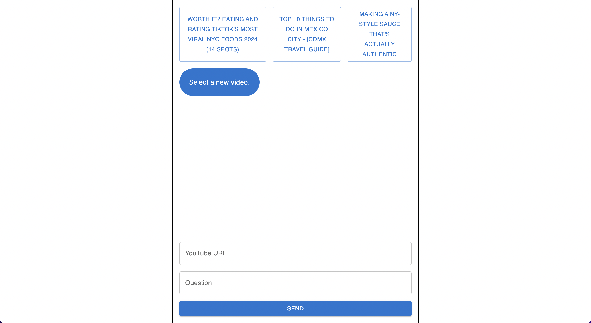
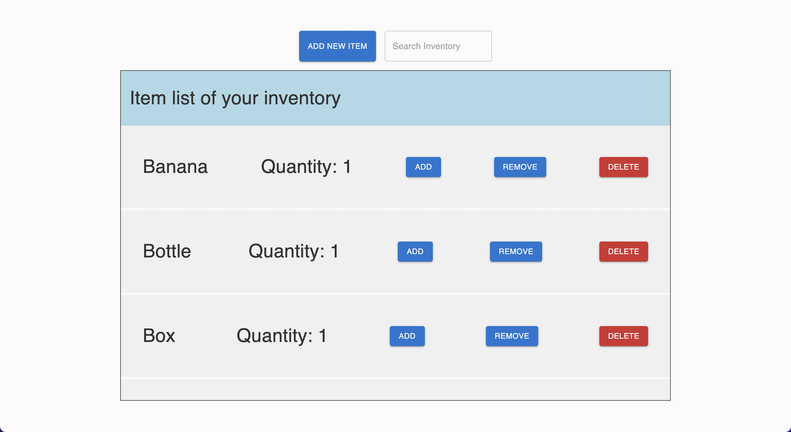
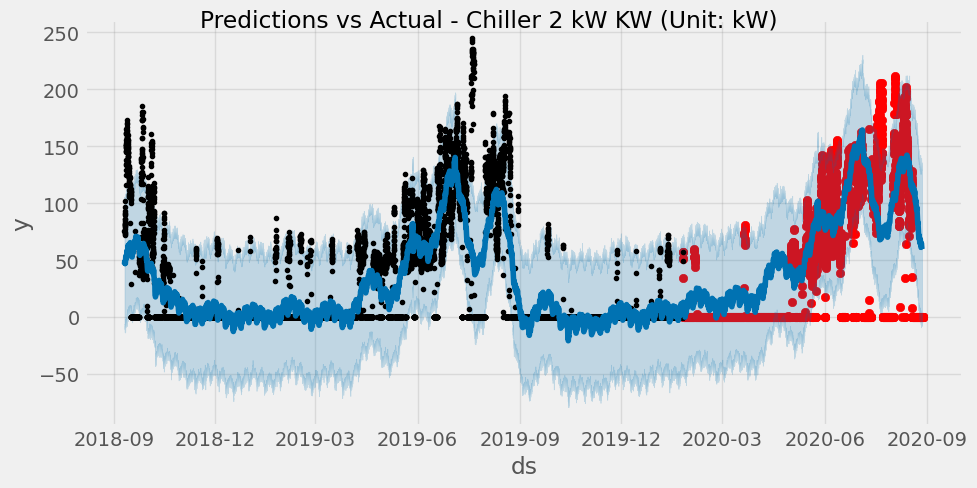
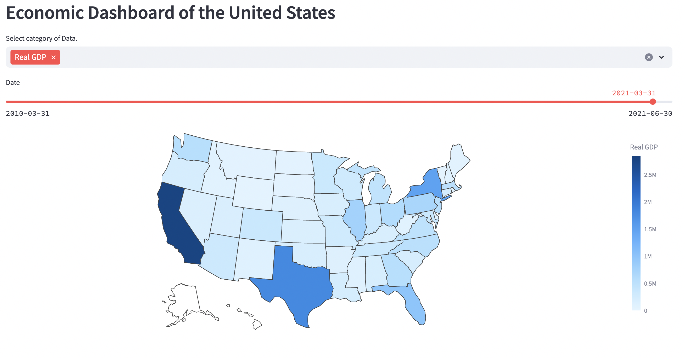

SAAS AI Flashcards
This is a AI-powered application that allows users to create, and study flashcards from any text input. This project uses Next.js, Material-UI (MUI), OpenAI, Stripe, and Clerk.
Technologies: JavaScript, React, Next.js, Python, OpenAI

AI YouTube Chatbot
This project is an AI powered chatbot that takes a youtube URL and a question to generate a response based on the video. The front end is built using Next.js to communicate with the FastAPI backend; the backend uses Pinecone for vector storage, OpenAI for embedding, and OpenRouter for LLM integration. It returns answers to the users questions based on the context of the video.
Technologies: JavaScript, React, Next.js, Python, FastAPI, Pinecone, OpenAI, OpenRouter, Langchain

Inventory Tracker
This project is an inventory management web application built using Next.js, Firebase Firestore, and Material-UI. This application allows users to search, add, update, and delete items.
Technologies: JavaScript, Next.js, Firebase Firestore, Material-UI
Python Webscraper
This project is a web scraping tool designed to extract coffee data from Beanz.com. The website's filters were not helpful for finding specific coffee types, so I developed this scraper to gather information about each coffee on the site.
Technologies: Python, Pandas, Selenium, BeautifulSoup
Github

Energy Consumption Predictor
This project aims to predict future energy usage of equipment using advanced forecasting techniques such as Facebook Prophet. By leveraging these tools, we can anticipate energy consumption patterns, enabling better resource allocation and energy efficiency strategies.
Technologies: Python, Pandas, Keras, Tensorflow, Facebook Prophet
Github

Economic Dashboard
Making an interactive dashboard where users can visualize comparisons of different metrics across different states and regions in America.
Technologies: Python, Pandas, Plotly, Seaborn, Streamlit
Github